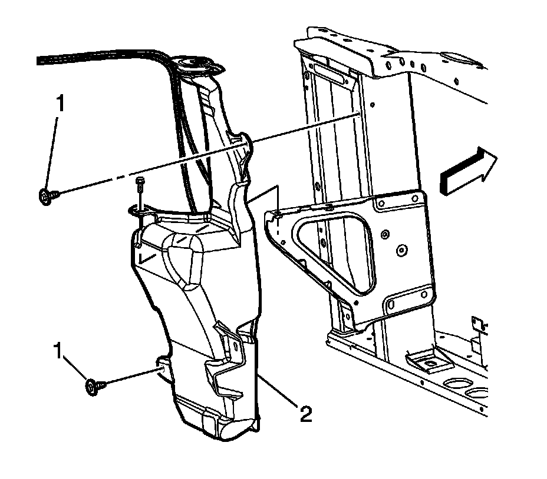

Windshield Washer Reservoir: Service and Repair
WASHER SOLVENT CONTAINER REPLACEMENT
REMOVAL PROCEDURE

1. Raise and support the vehicle. Refer to Vehicle Lifting.
2. Remove the left front wheel assembly.
3. Remove the left front wheelhouse liner.
4. Disconnect the washer pump hoses (1, 2) from the left side fender flange.
5. Drain the windshield washer solvent into a suitable container.
6. Disconnect the electrical connectors.
7. Lower the vehicle in order to access the hood latch.
8. Open the hood.
9. Remove the windshield washer solvent cap.
10. Remove the auxiliary battery tray, if equipped.
11. Remove the upper windshield washer container bolt from under the auxiliary battery tray, if equipped.
12. IMPORTANT: Remove the washer container from the underside of the vehicle through the wheelhouse opening.
Remove the upper windshield washer solvent container bolts.
13. Remove the windshield washer solvent container assembly (2).
INSTALLATION PROCEDURE
1. Transfer washer pumps and level indicator to the new washer solvent container.
2. Install the windshield washer container assembly.
3. Install the upper windshield washer container bolt to the auxiliary battery tray, if equipped.
4. Install the upper windshield washer solvent container bolts.
NOTE: Refer to Fastener Notice.
Tighten the bolts to 9 N.m (80 lb in).
5. Install the auxiliary battery tray, if equipped.
6. Install the windshield washer solvent cap.
7. Connect the electrical connectors.
8. Connect the washer pump hoses (1, 2).
9. Install the left front wheelhouse liner.
10. Install the left front wheel assembly.
11. Fill the washer solvent container with windshield solvent. Refer to Fluid and Lubricant Recommendations.